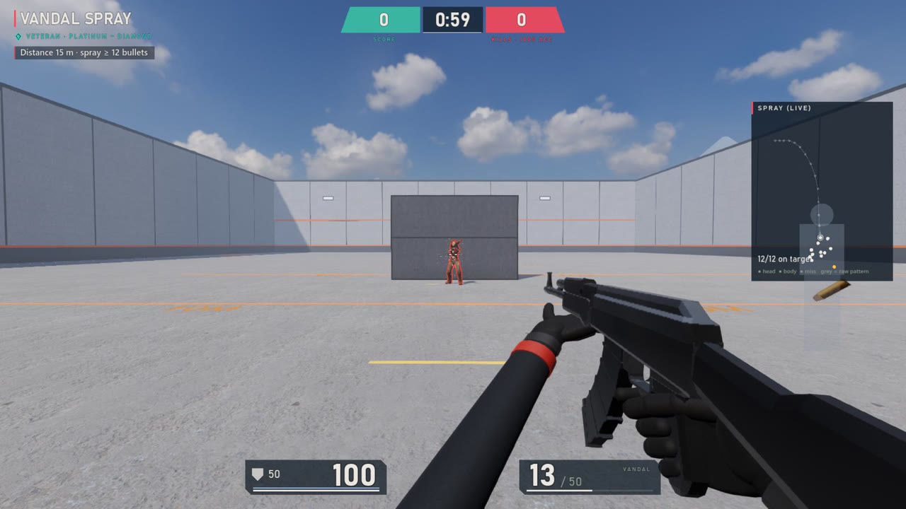

ValTrainer · Spray control
VALORANT spray control: Vandal and Phantom recoil practice
Good spray control wins the fights where a one-tap didn't land: the retake, the double peek, the enemy who walks out close. It is a habit you can build in a few minutes a day. Here is how VALORANT recoil behaves, when to spray at all, and how to practise it, with or without ValTrainer.

How recoil works in VALORANT
- Stop before you shoot. Rifles are very accurate on the first bullet when you are standing still. Running makes them wildly inaccurate, which is why counter-strafing (tapping the opposite key to stop) matters as much as the spray itself.
- The spray climbs, then drifts. Hold the trigger and the bullets rise for the first several rounds, then wander sideways while the spread grows. The first bullets matter most.
- Let go and it resets. Release the trigger and the recoil recovers after a short pause. A single tap recovers quickly; a full spray takes longer.
- Two rifles, two styles. The Vandal fires 9.75 rounds per second from a 25-round magazine and does the same damage at every range. The Phantom fires 11 rounds per second from a 30-round magazine, with damage that drops off at range.
Tap, burst or spray: when to use each
- Long range: tap. Make the first bullet count, then wait for the recoil to reset before the next one.
- Medium range: short bursts of two to four bullets, aimed at the head.
- Close range, or several enemies: spray, pulling down to keep the bullets on the upper body and head.
Most missed sprays are really missed first shots: the crosshair was too low, or you were still moving. Fix the start and the spray gets easier.
How to practise Vandal spray control
- Learn the shape. In the Range or a custom game, spray at a wall from about 10 metres without touching the mouse. Look at the bullet holes: that is what you are pulling against.
- Start short. Spray 5 bullets and pull down so they land in one tight group. Then 8, then 12. Only add bullets when the shorter spray is consistent.
- Pull smoothly. The pull-down is one steady motion that starts with the first bullets, not a late jerk. Pulling too far is as common as not pulling enough.
- Correct the drift. Once the climb is under control, watch which way the later bullets wander and lean the other way.
- Move to targets. Spray at bots, then practise spray transfers: kill one target and drag to the next without letting go.
- Check, then repeat. Look at where your bullets went after every spray. Feedback is what turns practice into a habit.
The same steps work for the Phantom and the other automatic guns; only the shape and timing change.
Recoil practice in ValTrainer
ValTrainer is a free aim trainer for VALORANT players that uses your own sensitivity, crosshair and keybinds. Its recoil drills:
- Vandal Spray and Phantom Spray. Spray a standing agent and keep the whole spray on the body. A live spray chart draws every bullet (head, body or miss) against the target while you hold the trigger, with the gun's raw pattern in grey, and keeps the last spray on screen afterwards. Coaching tips such as "pull down more" or "counter the drift to the left" follow each spray.
- Tiers that grow with you. The distance and the spray length that counts go from 8 metres and 5 bullets on Rookie (Iron–Bronze) to 25 metres and 25 bullets on Pro (Radiant), with the Phantom asking for a few more bullets.
- Spray Transfer. Kill every agent in one continuous spray, with any full-auto gun from the Spectre to the Odin.
- Long-range Taps (tiny heads at 30–50 m with the Vandal and a ring that shows when the recoil has reset), Sheriff One-Taps and a Counter-Strafe drill for the first shot.
- An aim coach that rates your spray as one of 8 skills and flags a late pull-down, with the drills to fix it.
All 20 guns use VALORANT's numbers for fire rate, magazine, damage by range and spread. Riot doesn't publish per-bullet recoil, so ValTrainer's sprays are reconstructed from Riot's documented rules: treat them as close practice, not an exact copy. For first shots, a crosshair you can see on every map helps, and spray practice fits well at the end of a warm-up.
Questions
How do you control spray in VALORANT?
Stop moving, start on the head or upper chest, then pull the mouse down smoothly as the gun climbs and correct sideways when it drifts. At long range, tap or burst instead of spraying.
Is the Vandal or the Phantom easier to spray?
The Phantom fires faster, holds 30 rounds and is usually seen as easier to spray up close. The Vandal does the same damage at every range, which rewards taps and short bursts at long range.
How long should I practise spray control?
A few minutes of focused sprays a day is enough to build the habit. Short, deliberate sprays with a look at where the bullets went beat long sessions of holding the trigger.
Are ValTrainer's spray patterns the real VALORANT patterns?
They follow Riot's documented recoil rules, but Riot doesn't publish per-bullet patterns, so the numbers are reconstructions. Use ValTrainer to build the pull-down habit and check the feel in VALORANT's Range.
More guides for VALORANT players
Get ValTrainer
Free, open source, no account. Windows 10 and 11.
Download for Windows Install help
Or in a terminal: winget install Valtrainer.ValTrainer · Also on
itch.io · Questions? Discord